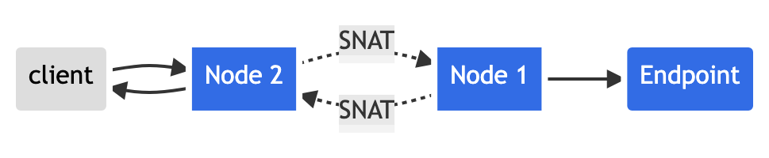
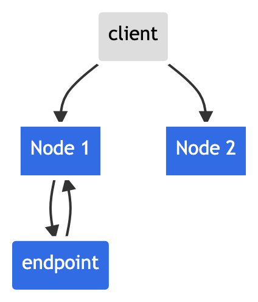
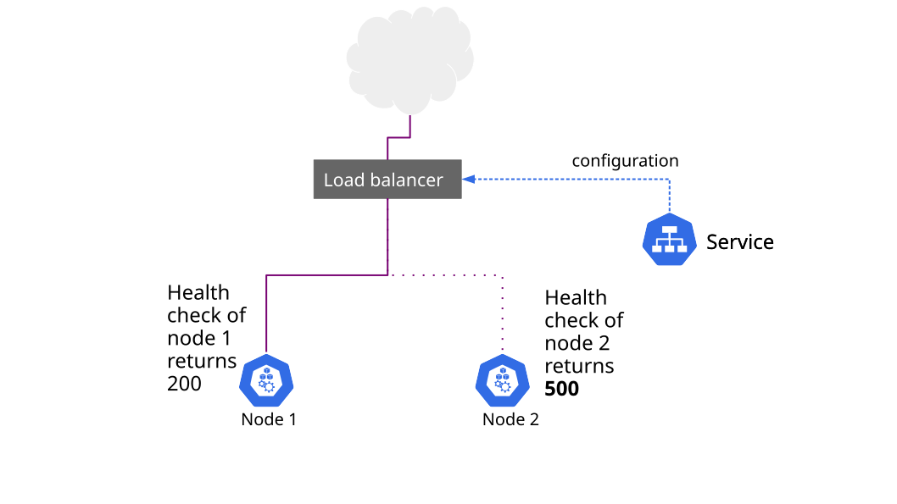

Applications running in a Kubernetes cluster find and communicate with each other, and the outside world, through the Service abstraction. This document explains what happens to the source IP of packets sent to different types of Services, and how you can toggle this behavior according to your needs.
Before you begin
Terminology
This document makes use of the following terms:
- NAT
- Network address translation
- Source NAT
- Replacing the source IP on a packet; in this page, that usually means replacing with the IP address of a node.
- Destination NAT
- Replacing the destination IP on a packet; in this page, that usually means replacing with the IP address of a Pod
- VIP
- A virtual IP address, such as the one assigned to every Service in Kubernetes
- kube-proxy
- A network daemon that orchestrates Service VIP management on every node
Prerequisites
You need to have a Kubernetes cluster, and the kubectl command-line tool must be configured to communicate with your cluster. It is recommended to run this tutorial on a cluster with at least two nodes that are not acting as control plane hosts. If you do not already have a cluster, you can create one by using minikube or you can use one of these Kubernetes playgrounds:
The examples use a small nginx webserver that echoes back the source IP of requests it receives through an HTTP header. You can create it as follows:
Note
The image in the following command only runs on AMD64 architectures.
kubectl create deployment source-ip-app --image=registry.k8s.io/echoserver:1.10The output is:
deployment.apps/source-ip-app createdObjectives
- Expose a simple application through various types of Services
- Understand how each Service type handles source IP NAT
- Understand the tradeoffs involved in preserving source IP
Source IP for
Services with Type=ClusterIP
Packets sent to ClusterIP from within the cluster are never source
NAT'd if you're running kube-proxy in iptables
mode, (the default). You can query the kube-proxy mode by fetching
http://localhost:10249/proxyMode on the node where
kube-proxy is running.
kubectl get nodesThe output is similar to this:
NAME STATUS ROLES AGE VERSION
kubernetes-node-6jst Ready <none> 2h v1.13.0
kubernetes-node-cx31 Ready <none> 2h v1.13.0
kubernetes-node-jj1t Ready <none> 2h v1.13.0Get the proxy mode on one of the nodes (kube-proxy listens on port 10249):
# Run this in a shell on the node you want to query.
curl http://localhost:10249/proxyModeThe output is:
iptablesYou can test source IP preservation by creating a Service over the source IP app:
kubectl expose deployment source-ip-app --name=clusterip --port=80 --target-port=8080The output is:
service/clusterip exposedkubectl get svc clusteripThe output is similar to:
NAME TYPE CLUSTER-IP EXTERNAL-IP PORT(S) AGE
clusterip ClusterIP 10.0.170.92 <none> 80/TCP 51sAnd hitting the ClusterIP from a pod in the same
cluster:
kubectl run busybox -it --image=busybox:1.28 --restart=Never --rmThe output is similar to this:
Waiting for pod default/busybox to be running, status is Pending, pod ready: false
If you don't see a command prompt, try pressing enter.
You can then run a command inside that Pod:
# Run this inside the terminal from "kubectl run"
ip addr1: lo: <LOOPBACK,UP,LOWER_UP> mtu 65536 qdisc noqueue
link/loopback 00:00:00:00:00:00 brd 00:00:00:00:00:00
inet 127.0.0.1/8 scope host lo
valid_lft forever preferred_lft forever
inet6 ::1/128 scope host
valid_lft forever preferred_lft forever
3: eth0: <BROADCAST,MULTICAST,UP,LOWER_UP> mtu 1460 qdisc noqueue
link/ether 0a:58:0a:f4:03:08 brd ff:ff:ff:ff:ff:ff
inet 10.244.3.8/24 scope global eth0
valid_lft forever preferred_lft forever
inet6 fe80::188a:84ff:feb0:26a5/64 scope link
valid_lft forever preferred_lft forever…then use wget to query the local webserver
# Replace "10.0.170.92" with the IPv4 address of the Service named "clusterip"
wget -qO - 10.0.170.92CLIENT VALUES:
client_address=10.244.3.8
command=GET
...The client_address is always the client pod's IP
address, whether the client pod and server pod are in the same node or
in different nodes.
Source IP for
Services with Type=NodePort
Packets sent to Services with Type=NodePort
are source NAT'd by default. You can test this by creating a
NodePort Service:
kubectl expose deployment source-ip-app --name=nodeport --port=80 --target-port=8080 --type=NodePortThe output is:
service/nodeport exposedNODEPORT=$(kubectl get -o jsonpath="{.spec.ports[0].nodePort}" services nodeport)
NODES=$(kubectl get nodes -o jsonpath='{ $.items[*].status.addresses[?(@.type=="InternalIP")].address }')If you're running on a cloud provider, you may need to open up a
firewall-rule for the nodes:nodeport reported above. Now
you can try reaching the Service from outside the cluster through the
node port allocated above.
for node in $NODES; do curl -s $node:$NODEPORT | grep -i client_address; doneThe output is similar to:
client_address=10.180.1.1
client_address=10.240.0.5
client_address=10.240.0.3Note that these are not the correct client IPs, they're cluster internal IPs. This is what happens:
- Client sends packet to
node2:nodePort node2replaces the source IP address (SNAT) in the packet with its own IP addressnode2replaces the destination IP on the packet with the pod IP- packet is routed to node 1, and then to the endpoint
- the pod's reply is routed back to node2
- the pod's reply is sent back to the client
Visually:

To avoid this, Kubernetes has a feature to preserve
the client source IP. If you set
service.spec.externalTrafficPolicy to the value
Local, kube-proxy only proxies proxy requests to local
endpoints, and does not forward traffic to other nodes. This approach
preserves the original source IP address. If there are no local
endpoints, packets sent to the node are dropped, so you can rely on the
correct source-ip in any packet processing rules you might apply a
packet that make it through to the endpoint.
Set the service.spec.externalTrafficPolicy field as
follows:
kubectl patch svc nodeport -p '{"spec":{"externalTrafficPolicy":"Local"}}'The output is:
service/nodeport patchedNow, re-run the test:
for node in $NODES; do curl --connect-timeout 1 -s $node:$NODEPORT | grep -i client_address; doneThe output is similar to:
client_address=198.51.100.79Note that you only got one reply, with the right client IP, from the one node on which the endpoint pod is running.
This is what happens:
- client sends packet to
node2:nodePort, which doesn't have any endpoints - packet is dropped
- client sends packet to
node1:nodePort, which does have endpoints - node1 routes packet to endpoint with the correct source IP
Visually:

Source IP for
Services with Type=LoadBalancer
Packets sent to Services with Type=LoadBalancer
are source NAT'd by default, because all schedulable Kubernetes nodes in
the Ready state are eligible for load-balanced traffic. So
if packets arrive at a node without an endpoint, the system proxies it
to a node with an endpoint, replacing the source IP on the
packet with the IP of the node (as described in the previous
section).
You can test this by exposing the source-ip-app through a load balancer:
kubectl expose deployment source-ip-app --name=loadbalancer --port=80 --target-port=8080 --type=LoadBalancerThe output is:
service/loadbalancer exposedPrint out the IP addresses of the Service:
kubectl get svc loadbalancerThe output is similar to this:
NAME TYPE CLUSTER-IP EXTERNAL-IP PORT(S) AGE
loadbalancer LoadBalancer 10.0.65.118 203.0.113.140 80/TCP 5mNext, send a request to this Service's external-ip:
curl 203.0.113.140The output is similar to this:
CLIENT VALUES:
client_address=10.240.0.5
...However, if you're running on Google Kubernetes Engine/GCE, setting
the same service.spec.externalTrafficPolicy field to
Local forces nodes without Service endpoints to
remove themselves from the list of nodes eligible for loadbalanced
traffic by deliberately failing health checks.
Visually:

You can test this by setting the annotation:
kubectl patch svc loadbalancer -p '{"spec":{"externalTrafficPolicy":"Local"}}'You should immediately see the
service.spec.healthCheckNodePort field allocated by
Kubernetes:
kubectl get svc loadbalancer -o yaml | grep -i healthCheckNodePortThe output is similar to this:
healthCheckNodePort: 32122The service.spec.healthCheckNodePort field points to a
port on every node serving the health check at /healthz.
You can test this:
kubectl get pod -o wide -l app=source-ip-appThe output is similar to this:
NAME READY STATUS RESTARTS AGE IP NODE
source-ip-app-826191075-qehz4 1/1 Running 0 20h 10.180.1.136 kubernetes-node-6jstUse curl to fetch the /healthz endpoint on
various nodes:
# Run this locally on a node you choose
curl localhost:32122/healthz1 Service Endpoints foundOn a different node you might get a different result:
# Run this locally on a node you choose
curl localhost:32122/healthzNo Service Endpoints FoundA controller running on the control plane is responsible for
allocating the cloud load balancer. The same controller also allocates
HTTP health checks pointing to this port/path on each node. Wait about
10 seconds for the 2 nodes without endpoints to fail health checks, then
use curl to query the IPv4 address of the load
balancer:
curl 203.0.113.140The output is similar to this:
CLIENT VALUES:
client_address=198.51.100.79
...Cross-platform support
Only some cloud providers offer support for source IP preservation
through Services with Type=LoadBalancer. The cloud provider
you're running on might fulfill the request for a loadbalancer in a few
different ways:
With a proxy that terminates the client connection and opens a new connection to your nodes/endpoints. In such cases the source IP will always be that of the cloud LB, not that of the client.
With a packet forwarder, such that requests from the client sent to the loadbalancer VIP end up at the node with the source IP of the client, not an intermediate proxy.
Load balancers in the first category must use an agreed upon protocol
between the loadbalancer and backend to communicate the true client IP
such as the HTTP Forwarded or
X-FORWARDED-FOR
headers, or the proxy
protocol. Load balancers in the second category can leverage the
feature described above by creating an HTTP health check pointing at the
port stored in the service.spec.healthCheckNodePort field
on the Service.
Cleaning up
Delete the Services:
kubectl delete svc -l app=source-ip-appDelete the Deployment, ReplicaSet and Pod:
kubectl delete deployment source-ip-appWhat's next
- Learn more about connecting applications via services
- Read how to Create an External Load Balancer